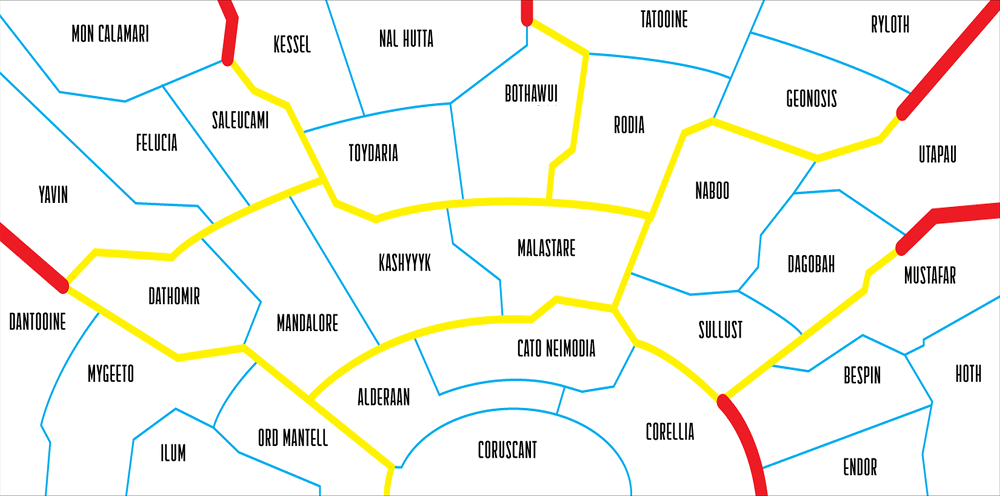

<div class="sw-map-panel">
	<div class="sw-map-inner-panel">
		
    
    
    
	</div>
	<div class="sw-map-legend">
		
		<div class="sw-map-legend-desc" i18n> - system checked by Imperium</div>
	</div>
</div>
